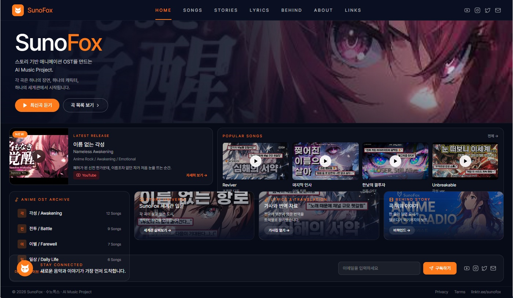

SunoFox Home Home Songs Stories Lyrics Behind About Links YouTube Instagram X Email 최신곡 듣기 곡 목록 보기 Latest Release 자세히 보기 전체 Reviver 마지막 인사 한낮의 결투자 Unbreakable Anime OST Archive Story Universe Lyrics and Translation Behind Story 구독하기 YouTube Instagram X Email linktr.ee/sunofoxSunoFox
스토리 기반 애니메이션 OST를 만드는 AI Music Project입니다.
Latest Release: 이름 없는 각성, Nameless Awakening.
Popular Songs: Reviver, 마지막 인사, 한낮의 결투자, Unbreakable.